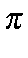

Next: Memory Management
Up: Why Use Localized
Previous: Energy Considerations.
The use of localized molecular orbitals to help solve the self-consistent
field equations is limited to what we will call 'normal' compounds. In
order for a system to be classified as 'normal', it must be possible to
sketch the molecular structure using only the following drawing elements:
- 1.
- Chemical symbols to represent the atoms.
- 2.
- A maximum valency of 4 for any non-hydrogen atom.
- 3.
- Lines to represent s
bonds.
- 4.
- Pairs of parallel lines to represent double bonds, and three
parallel lines to represent triple bonds.
- 5.
- Pairs of dots to represent lone-pairs.
- 6.
- `+' and '-' signs, to represent charges.
This definition allows aromatic rings and delocalized 
systems to be
present, as these structures can be represented as localized
p
bonds.
What is not allowed are radicals, open-shell systems, electronic
excited states, etc. Hypervalent systems are allowed, as they can always be
written as non-hypervalent Lewis structures, for example, SF6 can be submitted
as a system of point group Oh, in which case the Lewis structure generated
would be represented by SF4++ plus 2F-.
Next: Memory Management
Up: Why Use Localized
Previous: Energy Considerations.
J. J. P. Stewart
Fujitsu Ltd. 2001